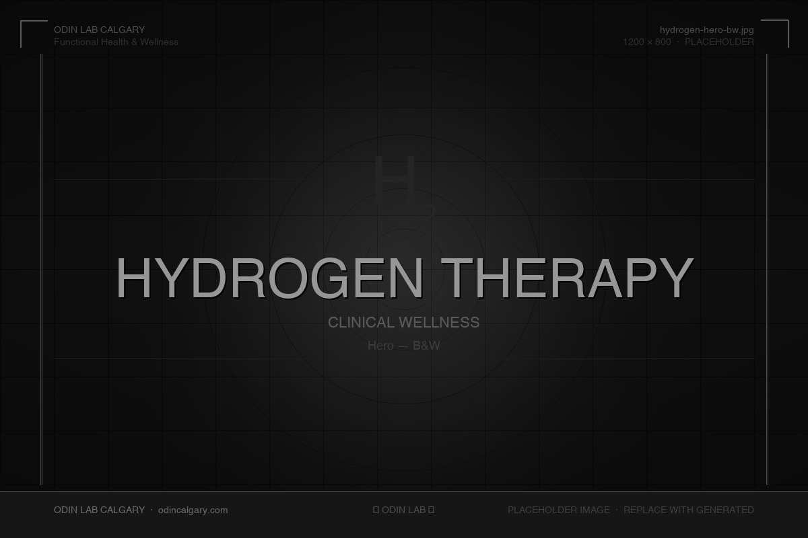
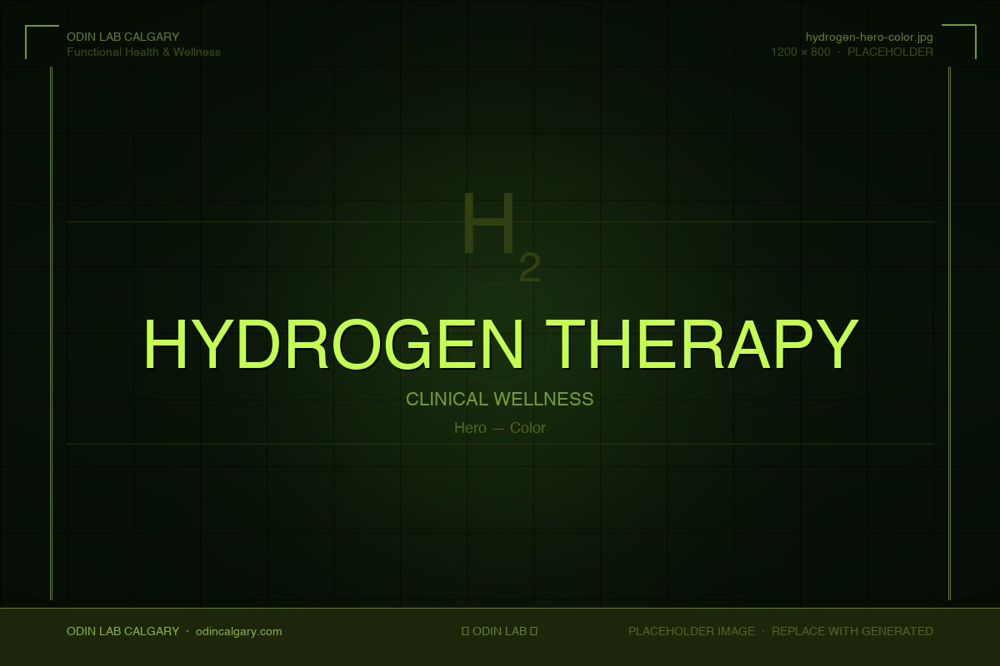

We Do Not Practice Medicine. We Practice Health.
Breathe Into Recovery: Precision Antioxidant Therapy at the Cellular Level
Molecular hydrogen is one of the most selectively targeted antioxidants identified in clinical research — neutralizing the most damaging free radicals without disrupting the body's own signaling chemistry. At Odin Lab, we use hydrogen inhalation as a foundational tool in oxidative load reduction protocols for individuals dealing with chronic inflammation, systemic fatigue, and performance recovery.
Book a Consultation

Over 2,000 studies have examined molecular hydrogen's therapeutic properties across human, animal, and in vitro models as of 2022.
A 2023 systematic review assessed outcomes from 81 registered clinical trials evaluating hydrogen therapy across major disease categories.
Unlike broad-spectrum antioxidants, H₂ reacts specifically with hydroxyl radicals and peroxynitrite — without interfering with beneficial ROS signaling.
Due to its molecular size and neutral charge, inhaled hydrogen diffuses across cell membranes and into mitochondria within approximately one minute of inhalation.
Why Hydrogen Therapy Works
Molecular hydrogen produces measurable outcomes across multiple physiological systems — not because it does one thing powerfully, but because its mechanism of action touches the root of how cells generate and manage oxidative burden.
Selective Neutralization of Cytotoxic Free Radicals
Molecular hydrogen targets only the most destructive reactive oxygen species — specifically the hydroxyl radical (•OH) and peroxynitrite (ONOO⁻) — without indiscriminately quenching ROS that serve legitimate physiological roles in immune signaling and cellular communication. This selectivity, first documented by Ohsawa et al. in Nature Medicine (2007), is the core mechanism that separates H₂ from conventional antioxidant supplementation.
Mitochondrial Protection and Energy System Support
H₂ molecules are uniquely capable of penetrating the mitochondrial membrane and scavenging radicals at their source. Research published in Frontiers in Cell and Developmental Biology (2023) identifies mitochondria as a central hub for hydrogen's protective effects, including activation of the Keap1-Nrf2 antioxidant system, which upregulates endogenous enzymes such as superoxide dismutase and glutathione peroxidase.
Systemic Anti-Inflammatory Action
Hydrogen therapy suppresses the NF-κB signaling pathway — one of the master regulators of the body's inflammatory response — leading to measurable reductions in pro-inflammatory cytokines including TNF-α, IL-1β, and IL-6. In a 2020 clinical study, patients with asthma and COPD who inhaled a 2.4% H₂-containing gas mixture for 45 minutes showed significant decreases in MCP-1, IL-4, and IL-6.
Athletic Recovery and Reduction of Exercise-Induced Oxidative Stress
Hydrogen inhalation has been shown in multiple studies to reduce post-exercise blood lactate, attenuate oxidative stress markers, and help preserve nitric oxide bioavailability after training. A 2022 study in Journal of Thoracic Disease demonstrated that H₂ inhalation in athletes reduced exercise-induced injury by targeting inflammatory and oxidative pathways without blunting the adaptive stimulus of training.
Support for Neurological Health and Brain Resilience
Because of its small molecular size, hydrogen gas crosses the blood-brain barrier — an access point most antioxidant compounds cannot reliably achieve. Research in neurodegenerative conditions, including Parkinson's disease and ischemic stroke, has shown that hydrogen therapy can reduce infarct size, attenuate neuroinflammation, and slow the progression of oxidative damage to dopaminergic neurons.
Cardiovascular and Blood Pressure Support
A 2024 retrospective observational study in Frontiers in Cardiovascular Medicine evaluated hydrogen inhalation as an adjunct treatment in adults with hypertension over 24 weeks, finding improvements in blood pressure management alongside favorable shifts in inflammatory markers. Prior animal research demonstrated direct blood pressure-lowering effects, likely mediated through reduced vascular oxidative stress and improved endothelial function.
Respiratory Function and Lung Tissue Protection
Hydrogen's anti-inflammatory and antioxidant properties make it particularly relevant for respiratory conditions marked by airway inflammation and oxidative damage. Clinical data on COPD patients receiving hydrogen inhalation three times daily for 30 days showed improvements in CAT scores, dyspnea scales, and inflammatory biomarkers. A 2024 meta-analysis in Frontiers in Immunology confirmed hydrogen's anti-inflammatory activity in lung disease.
Quality of Life Support in Oncology Contexts
A 2020 clinical study found that advanced non-small cell lung cancer patients who added H₂ inhalation to their treatment protocols experienced reductions in drug-associated adverse events and improved progression-free survival compared to controls. Improvements were most pronounced in fatigue, sleep quality, appetite, and pain — the domains most frequently compromised by conventional oncology treatments.
How Hydrogen Works at the Cellular Level
Four converging mechanisms — not a single action — explain why hydrogen therapy produces clinical signal across such a diverse range of conditions.
Rapid Systemic Distribution via Inhalation
Molecular hydrogen (H₂) is the smallest molecule in existence — lighter and more diffusible than any other therapeutic compound used in clinical contexts. When inhaled, H₂ enters the bloodstream through the lungs within seconds and rapidly permeates cell membranes, reaching subcellular compartments — including the mitochondria — within approximately one minute. No carrier is needed, no receptor required. It distributes to tissues precisely where oxidative burden is highest.
Selective Free Radical Scavenging at the Source
The body generates reactive oxygen species (ROS) continuously as a byproduct of metabolism — many of which serve important signaling functions and should not be suppressed. However, during physiological stress, illness, intense exercise, or aging, production of the hydroxyl radical (•OH) and peroxynitrite (ONOO⁻) increases beyond what endogenous antioxidant systems can neutralize. Molecular hydrogen reacts preferentially with these two cytotoxic species, converting them to water — without interfering with hydrogen peroxide or superoxide, which retain their roles in immune response and intracellular signaling.
Nrf2 Pathway Activation and Endogenous Defense Upregulation
Beyond direct scavenging, hydrogen activates the Nrf2 pathway — the body's master regulator of endogenous antioxidant defense. When H₂ interacts with the Keap1-Nrf2 complex, it triggers nuclear translocation of Nrf2, which upregulates the expression of protective enzymes including superoxide dismutase (SOD), catalase, glutathione peroxidase (GPx), and heme oxygenase-1. This means hydrogen does not just act as an antioxidant itself — it primes your own cellular defense machinery to respond more robustly.
Mitochondrial Access and Coordinated Anti-Inflammatory Response
Mitochondria are the primary site of both ATP synthesis and ROS generation. Because H₂ reaches mitochondria directly, it targets ROS at their site of production rather than attempting to intercept them downstream. The activation of Nrf2 also simultaneously suppresses the NF-κB inflammatory pathway, creating a coordinated anti-inflammatory and cytoprotective response at the gene expression level. This convergence of mechanisms — not any single action — explains why hydrogen therapy shows clinical signal across such a diverse range of conditions.
What to Expect
Hydrogen inhalation is a passive, non-invasive protocol. The molecular work happens below the level of perception — what you experience is stillness.
Intake and Goal Review
Before your first session, a practitioner reviews your health history, current symptoms, and wellness goals. Hydrogen inhalation is positioned within your broader functional health protocol at Odin Lab — not administered in isolation. This ensures the session is targeted, not generic.
Setup
You are seated comfortably in a reclined or upright position. A nasal cannula — the same lightweight delivery device used in clinical oxygen therapy — is placed under your nose. The hydrogen generator produces a steady, low-flow stream of pure molecular hydrogen gas. There is no mask, no confinement, no discomfort.
The Session Itself
Over 30 to 60 minutes, you breathe normally. Hydrogen has no taste and no odor. Many clients use the time to read, listen to audio, or simply rest. The session is quiet and passive — the molecular work is happening at a level below perception. Some clients notice a subtle sense of ease or warmth; most report the primary experience is one of stillness.
Monitoring and Adjustment
Practitioners remain available throughout the session. Concentration levels and delivery are monitored to maintain consistent output within therapeutic parameters. If this is your first session, timing and exposure are calibrated conservatively before building up.
Post-Session Integration
After the session concludes, you are encouraged to hydrate and allow a short rest period before returning to high-intensity activity. Many clients report improved mental clarity, reduced physical tension, or a grounded sense of recovery in the hours following treatment. Results accumulate with consistent use — hydrogen inhalation is most effective as part of a regular protocol rather than a single intervention.
Conditions We Address With Hydrogen Therapy
Hydrogen's multi-mechanism action makes it clinically relevant across a broad spectrum of conditions driven by oxidative stress, inflammation, and energy system dysfunction.
The Research Behind Hydrogen Therapy
Our protocols are informed by a growing body of peer-reviewed research spanning two decades of hydrogen medicine.
Nature Medicine, 2007; 13(6): 688–694. DOI: 10.1038/nm1577
The landmark study establishing molecular hydrogen as a selective antioxidant: H₂ neutralized hydroxyl radicals and peroxynitrite in a rat brain ischemia-reperfusion model while leaving physiologically beneficial ROS intact, demonstrating significant reduction in brain injury and opening the field of hydrogen medicine.
Circulation Journal, 2016; 80(8): 1870–1873. DOI: 10.1253/circj.CJ-16-0127
A first-in-human pilot study in post-cardiac arrest patients found that inhaled 2% hydrogen gas was feasible and safe, with measurable arterial hydrogen concentrations and early signals of reduced oxidative stress and cytokine elevation compared to historical controls.
Medical Gas Research, 2020; 10(2): 75–80. DOI: 10.4103/2045-9912.285560
In a clinical study of advanced NSCLC patients, hydrogen inhalation (4–5 hours/day) alongside conventional therapies reduced drug-associated adverse events, improved quality of life metrics including fatigue and pain, and extended progression-free survival compared to controls receiving no hydrogen treatment.
Molecules, 2023; 28(23): 7785. DOI: 10.3390/molecules28237785
A comprehensive 2023 systematic review assessing 81 clinical trials and 64 human study publications across hydrogen therapy applications. Found positive outcomes across cardiovascular, respiratory, neurological, oncological, and metabolic disease categories, with a consistently favorable safety profile across administration methods including inhalation.
Start Your First Hydrogen Session
Hydrogen inhalation is available at Odin Lab as part of a structured functional health protocol. Book a discovery session and we will assess whether it belongs in your plan.
Book a Consultation